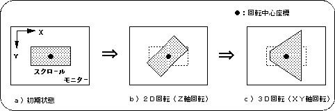
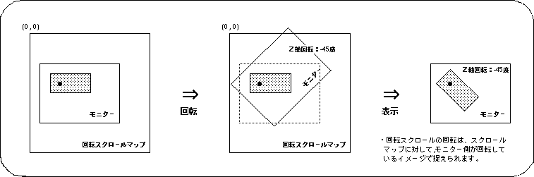
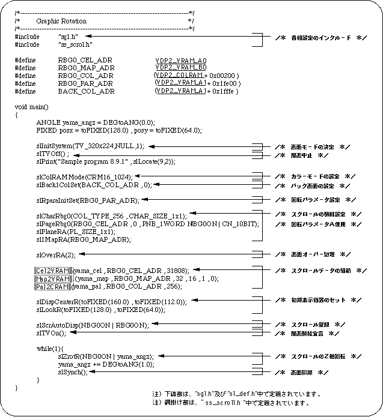
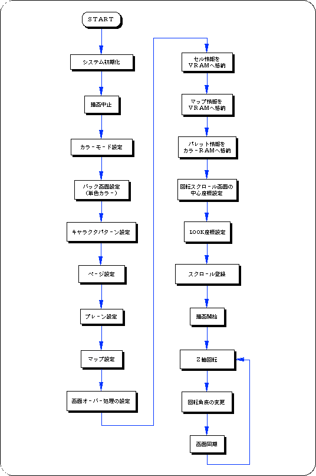
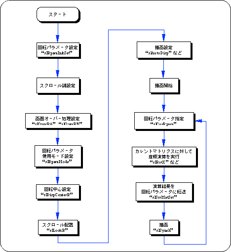
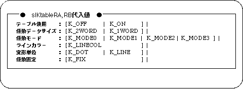
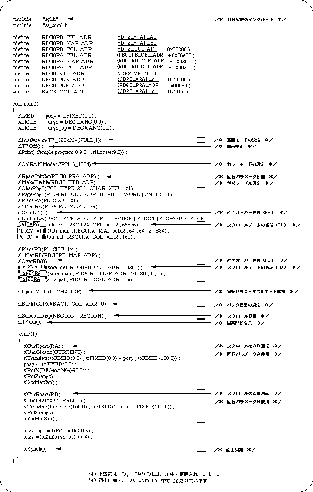
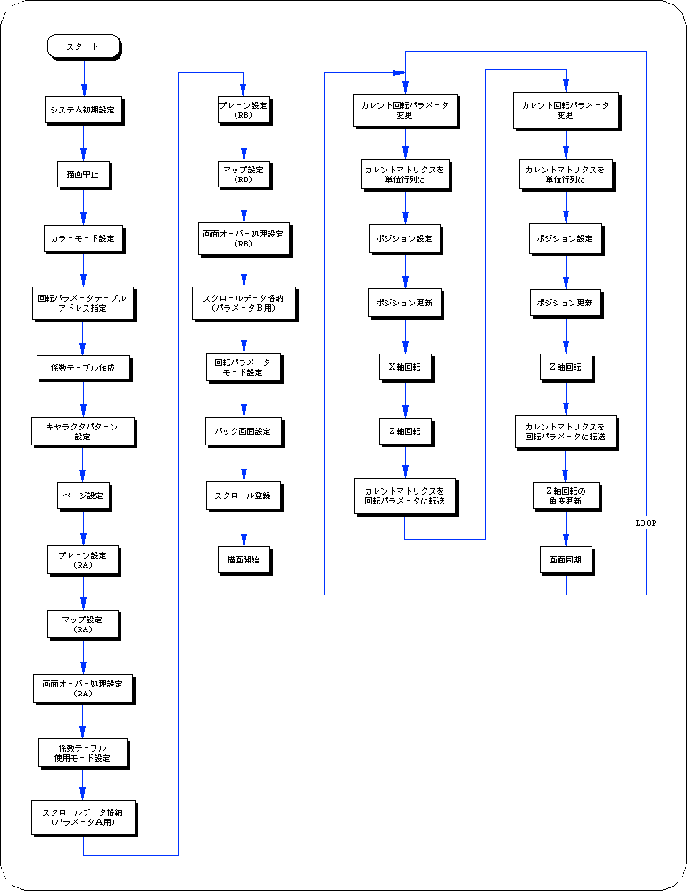

Return to previous page | Return to menu | Go to next page
In SEGA Saturn, it is possible to rotate the scroll with an arbitrary axis and arbitrary angle on the rotary scroll screen
(image model below).

● 2D rotation (Z-axis rotation)
Use the library function “slZrotR” to perform 2D rotation operation (Z-axis rotation) of the rotary scroll screen with SGL.
The point set by the library function “slDispCenterR” is used as the center of rotation (one point on the scroll map).

Notes on using functions
The function group “slZrotR”, “slZoomR”, “slLookR” used for the rotary scroll conversion operation is the same rotation parameter as the function “slScrMatSet” that performs various rotary scroll conversion operations (including 3D rotation). Please note that they cannot be used together.
This is because the above function group rewrites a specific area of the rotation parameter, whereas the function group described below rewrites the entire rotation parameter.
The following sample program (Listing 8-5) is an example of actually rotating the rotating scroll screen using the SGL library function.


● 3D rotation using current matrix
To perform 3D rotation operation (rotation of all axes) of the rotary scroll screen using the current matrix in SGL, it is necessary to take the following steps.
1) Settings for rotating scroll
Complete the settings required for using rotary scrolling, such as rotating parameter settings, screen overprocessing, and coefficient table settings.
2) Coordinate operation
First, the 3D rotation operation multiplied by the scroll is executed for the current matrix.
Use the same function group such as “slRorX”, “slTranslate”, “slScale”.
However, the operation sequence for rotation, movement, and enlargement / reduction operations is the reverse of the normal coordinate conversion operation (see “Chapter 4: Coordinate Conversion” for the conversion operation sequence).
The scroll coordinate system is the left-handed coordinate system with the positive and negative of the Z axis reversed, but it looks exactly the same because it is captured by the image of the monitor rotating relative to the scroll.
If you want to perform coordinate transformation with the same matrix manipulation procedure as normal coordinate transformation, use the function “slScrMatConv” before transferring the matrix data.
The function “slScrMatConv” converts the current matrix converted by the normal coordinate conversion procedure into a coordinate conversion matrix for scrolling and uses it as the current matrix.
3) Transfer the calculation result to the rotation parameter
Transfers the coordinate calculation result executed for the current matrix to the rotation parameter.
Rotating scroll is transformed / drawn based on the rotation parameter data transferred to the calculation result.
Use the function “slScrMatSet” to transfer data.

● Control zoom ratio using coefficient table
When performing 3D rotation operation of rotating scroll, rotating scroll scales the scroll according to the depth of the scroll. Usually, this scale ratio is calculated based on each parameter used for 3D coordinate calculation such as perspective transformation, and the scroll is deformed, but this deformation ratio is preset in line units or dot units, It is available at runtime and is called the coefficient table.
When using the coefficient table, the following two functions are required.
1) Creating a coefficient table
First, it is necessary to reserve an area for the coefficient table in the VRAM area.
Be sure to create the coefficient table in VRAM.
The coefficient table occupies one bank in the VRAM area. This is because the coefficient table refers to the VRAM area at the maximum number of accesses (8 times) per bank.
2) Coefficient table usage mode setting
When using the area specified as the coefficient table as the coefficient table, it determines the usage mode of how to use the coefficient table.

Note) When fixed coefficient is specified for the parameter, the coefficient table is assumed to be prepared in advance, and the calculation of the coefficient table in real time is not executed.
Caution
For details on the coefficient table, refer to “HARDWARE MANUAL vol.2: VDP2 User's Manual”.

